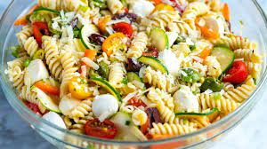

Awesome Pasta Salad

Tasty lookin Pasta Salad
all the goodieness
Ingredients
- 1 (16 ounce) package fusilli pasta
- 3 cups cherry tomatoes, halved
- 1/2 pound provolone cheese
- 1/2 pound salami
- 1/4 pound sliced pepperoni
- 1 large green bell pepper
- 1 (10 ounce) black olives
- 1 (4 ounce) jar pimentos
- 1 (8 ounce) bottled italian salad dresing
Steps:
- Bring a large pot of lightly salted water to a boil.
Add pasta, and cook for 8 to 10 minutes or until al dente.
Drain, and rinse with cold water.
- In a large bowl, combine pasta with tomatoes,
cheese, salami, pepperoni, green pepper,
olives, and pimentos.
Pour in salad dressing, and toss to coat.